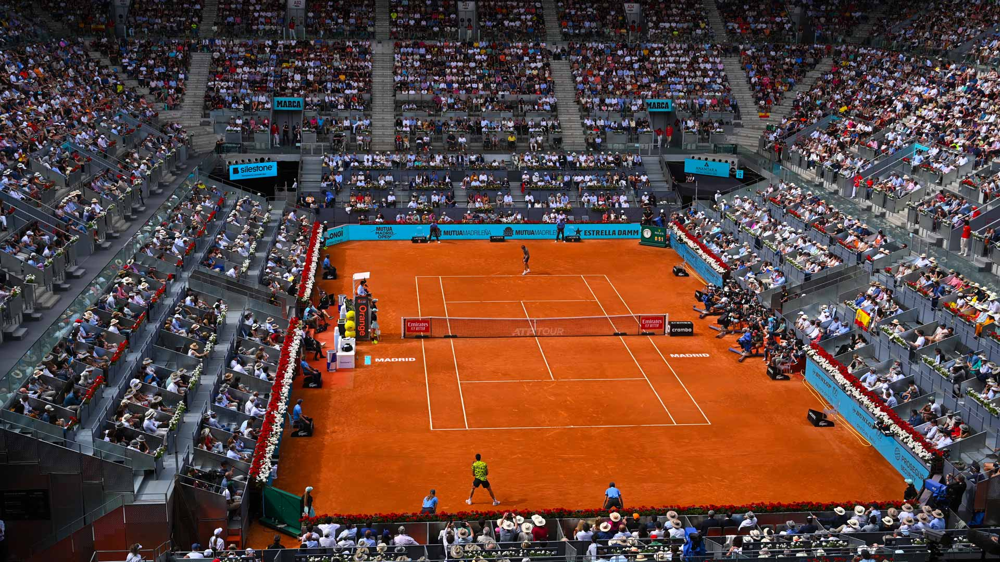
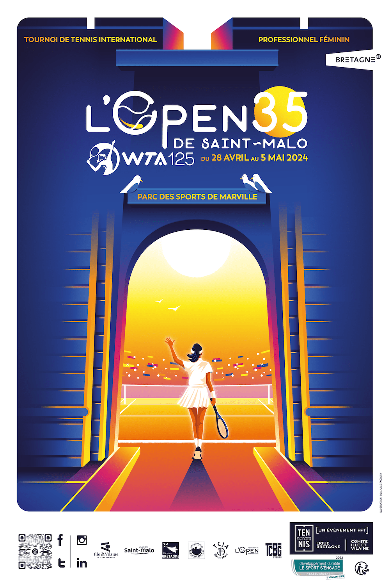

Tournaments
In tennis there are 5 different types of events that are played throughout the year. They include 125's, 250's, 500's, 1,000's, and grand slams. These tournaments determine the total amount of points that the winner can earn . At grand slams players can earn between 250 to 2,000 points if they win a tournament .
April 22nd - May 5th, 2024
Mutua Madrid Open: Madrid, Spain: April 22nd - May 5th,2024 
Spanish hopes Cristina Bucsa and Sara Sorribes Tormo excited the crowds at the Caja Magica on Sunday by capturing the Mutua Madrid Open doubles title on home soil. Playing their first tournament together as a doubles team, No.8 seeds Bucsa and Sorribes Tormo rolled past No.6 seeds Barbora Krejcikova and Laura Siegemund 6-0, 6-2 in the final to triumph at the year's first clay-court WTA 1000 event. Bucsa and Sorribes Tormo were dominant over two Grand Slam doubles champions in the 73-minute championship match. Buoyed by home support, the Spaniards converted half of their 12 break points while only dropping serve once. This is Bucsa's third career WTA doubles title, her second of the year (after Bogota with Kamilla Rakhimova) and her first at WTA 1000-level. Bucsa reached her career-high doubles ranking of No.38 last week and is projected to climb even higher on Monday. Sorribes Tormo won her fifth career WTA doubles title in Madrid, and her first this year. She also set a career-high doubles ranking this month, at No.26, and projected rankings could see her make her Top 20 doubles debut on Monday. This is Sorribes Tormo's second doubles title at WTA 1000-level. She previously won WTA 1000 Beijing last autumn alongside Marie Bouzkova. "I remember exactly when he was playing Medvedev in Australia, and it clicked for him," Swiatek said. "He also struggled for a bit of time, he was tense, and I think stressed. "That kind of gave me hope that maybe it will click, even after two hours." While much of the discussion about Swiatek centers on her formidable straight-set victories, she has also demonstrated remarkable resilience in securing several challenging three-set wins. Notably, her match-point saving win against Kaia Kanepi at the 2022 Australian Open and her gritty victory against Karolina Muchova in last year's Roland Garros final stand out. More recently, she staged a comeback from 4-1 down in the final set to defeat Danielle Collins at this year's Australian Open. But Madrid was different. The 22-year-old Swiatek saved three championship points in the longest final of the year to defeat two-time champion Aryna Sabalenka 6-4, 5-7, 7-6(7). "Physically and tennis-wise, I wasn't surprised [I could maintain the high-level for three hours], but I was surprised that in the third set I felt the best mentally," Swiatek said after the 3-hour, 11-minute match. "Because, yeah, I actually felt like I needed to dig through for these two hours and it didn't really work. I was, like, 'Oh, my God, am I going to feel a little bit more loose soon?'" As Swiatek said after the match, neither player deserved to lose. Sabalenka delivered what was arguably the finest performance of her career, maintaining a high level of play from start to finish. Yet, when the final point was played, it was Swiatek who had the winner’s trophy in hand. "I think it depends on what I'm going to do with this match now," Swiatek said on the WTA Insider Podcast, "because I can let it go and rest and just forget about it, or I can really take a big lesson from it. "So it depends on what is going to happen in the next weeks in terms of how I analyze it. If I am going to take this hope that even if I am feeling stressed for two hours I can still win a match or I can still feel better, it will give me a lot for the rest of my career." Aryna Sabalenka: A third Madrid Open title in four years was not in the cards for Sabalenka, but the World No.2 still exits Madrid with renewed momentum after a relative lull in her results since defending her Australian Open title. "I'm super happy that here in Madrid I was able to bring it all together and to be able to get back to my level," Sabalenka said in post-match press. "I think it's, you know, it only can get better from now on." Sebastian Korda and Jordan Thompson’s first week competing together on the doubles court ended in Mutua Madrid Open glory on Saturday afternoon in Spain. The scratch team of singles stars defeated Ariel Behar and Adam Pavlasek 6-3, 7-6(7) to clinch the trophy at the ATP Masters 1000 event. After entering the draw using a spot reserved for singles players as part of a new doubles format being trialled in Madrid, Korda and Thompson dropped just one set across five matches en route to the title. “We practised a tonne, and this was our first tournament together,” said Korda after winning his maiden tour-level doubles title. “It was a pretty good one, and [we will play] next week again in Rome. It was a lot of fun playing with Jordan this week and looking forward to next week.” Thompson stepped on court sporting a cut above his left eye. After clinching a 77-minute victory alongside Korda, the Australian explained that the pair’s morning practice was to blame. “He hit too good of a return and I just smoked myself in the head,” explained Thompson, who is now a six-time ATP Tour doubles champion. “I thought I was heading for the ER. It wasn’t that bad. A bit of a headache, but not bad. [The trophy] will help smooth things out.” In singles, Korda and Thompson are No. 26 and No. 33, respectively, in the PIF ATP Rankings. It is the second consecutive year that the Madrid doubles trophy has been lifted by players more renowned for their singles prowess, after Karen Khachanov and Andrey Rublev won the title in 2023. Korda and Thompson were ice cool under pressure beneath the Madrid sun to seal their win. They saved all six break points they faced against Behar and Pavlasek, according to Infosys ATP Stats, and Korda later revealed they had developed a fixed plan on serve at the start of their partnership. “Our slogan at the beginning of the week was Shake & Bake,” said the American. “That’s kind of been our motto this whole week. It’s been working.” Korda and Thompson clinched a decisive break in the fourth game on the way to winning the first set inside Manolo Santana Stadium. Also chasing their first ATP Tour crown as a team, Behar and Pavlasek raised their level in the second set but were crucially unable to convert their only set point at 7/6 in the tie-break. Andrey Rublev is an ATP Masters 1000 champion once again. The 26-year-old captured his second title at this level on Sunday at the Mutua Madrid Open, where he earned a comeback 4-6, 7-5, 7-5 victory against first-time Masters 1000 finalist Felix Auger-Aliassime. Rublev, who triumphed in Monte-Carlo in 2023, arrived in the Spanish capital off the back of a four-match losing streak. However, the seventh seed played close to his consistent best to reach the final and then dug deep in the title match to earn the biggest win of his season after two hours and 47 minutes. "I have no words. If you knew what I had been through in the past nine days you would not imagine that I would be able to win a title," said Rublev, who struggled with a fever at times during the tournament. "I'm incredibly happy. That one week changed everything because now it looks like I was not losing the last weeks in the first round! "I have to give full credit to the doctors. They were doing some tricky things and I was able to at least be able to play." After losing his serve in the first game of the match, Rublev improved throughout to impose his big-hitting game on the Canadian. He earned the decisive break of the second set in the 12th game, before he played with intensity and bravery in the decider to win his 16th tour-level title and second in 2024, having lifted the trophy in Hong Kong. "I would say this is the most proud title of my career," Rublev said. "I was almost dead every day. I was not sleeping at night. The last three, four days I didn't sleep." The Official App Of Tennis | Download ATP WTA Live App Rublev, who struck 25 winners against Auger-Aliassime, defeated second seed Carlos Alcaraz in the quarter-finals before he battled past Taylor Fritz to reach the final. In contrast, Auger-Aliassime benefited from a unique draw in Madrid, where he received a quarter-final walkover from Jannik Sinner and a first-set retirement from Jiri Lehecka in the semi-finals. While Auger-Aliassime entered the final fresher, Rublev showed grit and determination in the closing stages to improve to 8-1 in deciding sets this year. The seventh seed is up to fifth in the PIF ATP Live Race To Turin, aiming to qualify for the Nitto ATP Finals for the fifth consecutive year. Auger-Aliassime was chasing his sixth tour-level crown. The 23-year-old will rise to No. 20 in the PIF ATP Rankings on Monday, returning to the Top 20 for the first time since last October. Competing in their sixth Lexus ATP Head2Head meeting, Auger-Aliassime looked the fresher from the off against Rublev. The Canadian broke Rublev’s set to love in the first game and timed the ball cleanly, hitting 13 winners in the opener to move ahead. Rublev started to have more joy behind first serve in the second set, winning 80 per cent of points behind his first delivery in the second set compared to 62 per cent in the opener. The 26-year-old held with relative ease throughout the second set, not facing a break point, before he pounced in the 12th game and levelled the match when Auger-Aliassime pushed a forehand long. In a tight third set, Rublev continued to dictate on his first serve, winning 93 per cent of points behind his first serve. The 26-year-old took large cuts off the forehand and refused to miss in lengthy exchanges to improve to 5-1 in their Head2Head series. Rublev dropped to the floor after winning the trophy before embracing Auger-Aliassime.
L'Open 35 de Saint Malo: Saint Malo, France: April 29th - May 5th,2024 
At the L'Open 35 de Saint Malo in Saint Malo, France, 20-year-old wild card Boisson extended her breakthrough season by squeaking past her compatriot Chloe Paquet 4-6, 7-6(3), 6-3 in Sunday's final. In the highest-level final of her career thus far, Boisson, ranked a career-high No.191, outlasted 149th-ranked Paquet in a 2-hour and 53-minute thriller on the finalists' home soil. Paquet served for the championship on two occasions in the second set, at 5-4 and 6-5, but Boisson got out of peril both times without facing championship point. The wild card romped to a 5-0 lead in the second-set tiebreak, which she closed out en route to the trophy. Boisson beat three seeded players on her way to the final, including veteran Alizé Cornet, who announced she will retire from tennis after 2024 Roland Garros. Rising Boisson was on a roll even before her big win in Saint Malo. She had won 18 of her last 19 matches at ITF Challenger events, including three titles. In Saturday's Saint Malo doubles final, Amina Anshba and Anastasia Detuic took the title with a narrow 7-6(7), 2-6, [10-5] victory over Estelle Cascino and Carole Monnet in 1 hour and 51 minutes. It is the second WTA 125 doubles title for Anshba, who won 2023 Ljubljana with Quinn Gleason. This is the first WTA 125 doubles title for Detuic, who previously won WTA 250 Parma with Miriam Kolodziejova.
Catalonia Open WTA 125: LLeida, Spain: April 30th - May 5th,2024

At the Catalonia Open in Lleida, Spain, No.2 seed Siniakova triumphed over Egypt's Mayar Sherif 6-4, 4-6, 6-3 in a 2-hour and 51-minute marathon final. Sherif, who led the week in second-serve winning percentage, came into Sunday with a 6-0 record in WTA 125 clay-court finals. But Siniakova, the former WTA Doubles World No.1, reeled off the last three games of the final to end Sherif's streak. It is more hardware for Siniakova, currently ranked No.40 in singles. The Czech has already won five WTA 250 singles titles in her career, along with 24 doubles titles, including seven Grand Slams. She also won a WTA 125 doubles title at 2014 Limoges with Renata Voracova. One of the Hologic WTA Tour's top doubles teams won the Catalonia Open doubles final on Saturday, when No.1 seeds Nicole Melichar-Martinez and Ellen Perez held off Sherif and Katarzyna Piter 7-5, 6-2. Regular partners Melichar-Martinez and Perez, co-ranked World No.7 in the WTA doubles rankings, needed 1 hour and 12 minutes to win the final. Perez successfully defended her Catalonia Open title; she won while partnering Storm Hunter last year, when the event was held in Reus. Perez has won three WTA 125 doubles titles overall. It is Melichar-Martinez's second WTA 125 doubles title; she previously prevailed at 2016 San Antonio alongside Anna-Lena Groenefeld.